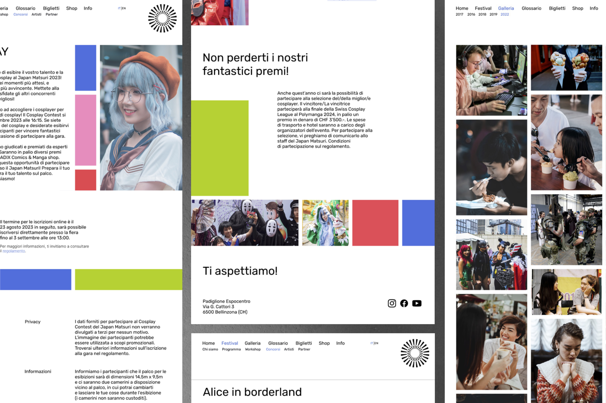
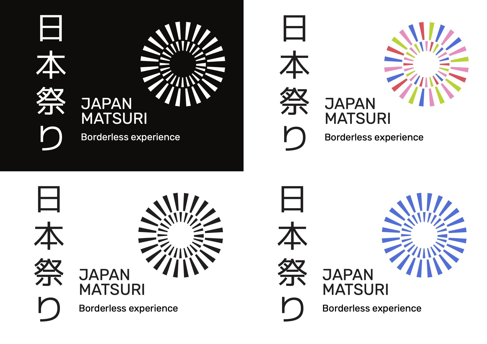
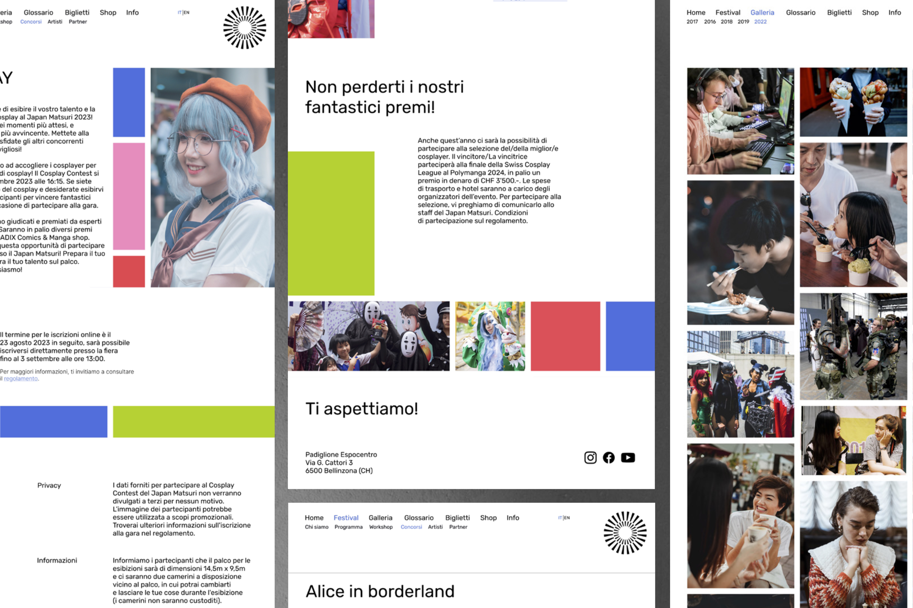
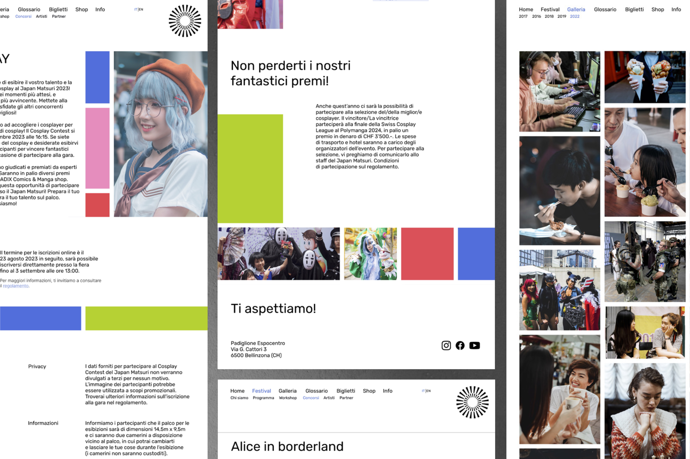
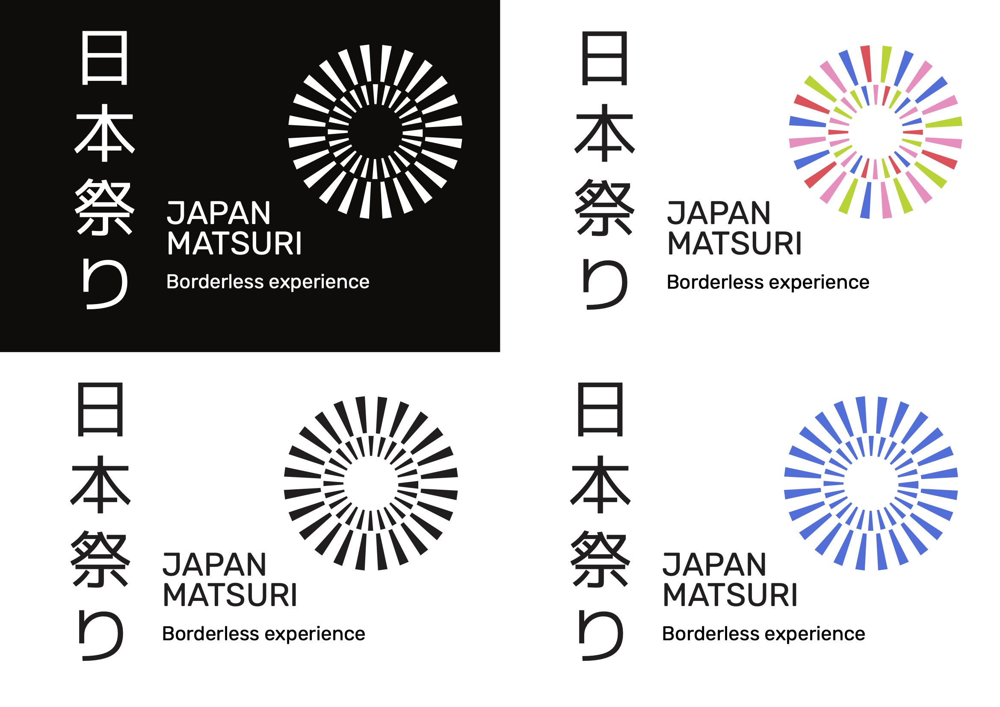
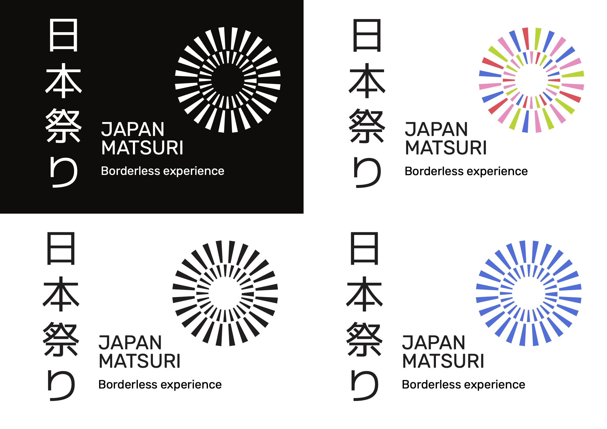

"Japan Matsuri, Borderless Experience" is a project that aims
to enhance the experience of one of the most important Japanese festivals in Ticino, held annually
in Bellinzona. Through visual engagement, the goal is to share with the audience the unique emotions
and sensations that characterize the event, allowing them to relive that experience each time.

DEVELOPMENT
The graphic style employs pure colors and geometric shapes, essential for the festival's identity. In Asian culture, geometric shapes symbolize balance, order, harmony, and perfection, influencing patterns, designs, and architectural structures. With this intent, a scheme is adopted inspired by a Japanese architectural element: the fusuma.

LOGO
The festival logo showcases a unique pictogram reminiscent of a fireworks explosion, symbolizing a tradition deeply ingrained in various Japanese celebrations such as events, festivals, ceremonies, and New Year festivities. Fireworks hold substantial cultural significance in Japan, highlighted by the dedicated traditional event called "Hanabi Taikai," where elaborate displays feature creative patterns and vibrant colors.
The festival, payoff "Borderless Experience," promotes an unrestricted atmosphere, emphasizing the absence of geographical and cultural boundaries. This concept fosters inclusivity, bringing together people from diverse cultures. By transcending borders, the festival integrates culture without limitations, creating a unified and enriching experience for all attendees.

 


 
